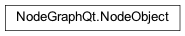

NodeObject¶
- class NodeGraphQt.NodeObject(qgraphics_item=None)¶
The
NodeGraphQt.NodeObjectclass is the main base class that all nodes inherit from.- Parameters
qgraphics_item (AbstractNodeItem) – QGraphicsItem item used for drawing.
Attributes:
Unique node identifier domain.
Initial base node name.
The node unique id.
The parent node graph.
Returns the
QtWidgets.QGraphicsItemused in the scene.Return the node model.
Methods:
set_view(item)Set a new
QGraphicsItemitem to be used as the view.set_model(model)Set a new model to the node model.
Update the node model from view.
update()Update the node view from model.
Serialize node model to a dictionary.
name()Name of the node.
set_name([name])Set the name of the node.
color()Returns the node color in (red, green, blue) value.
set_color([r, g, b])Sets the color of the node in (red, green, blue) value.
disabled()Returns whether the node is enabled or disabled.
set_disabled([mode])Set the node state to either disabled or enabled.
selected()Returns the selected state of the node.
set_selected([selected])Set the node to be selected or not selected.
create_property(name, value[, items, range, …])Creates a custom property to the node.
Returns all the node properties.
get_property(name)Return the node custom property.
set_property(name, value[, push_undo])Set the value on the node custom property.
has_property(name)Check if node custom property exists.
set_x_pos(x)Set the node horizontal X position in the node graph.
set_y_pos(y)Set the node horizontal Y position in the node graph.
set_pos(x, y)Set the node X and Y position in the node graph.
x_pos()Get the node X position in the node graph.
y_pos()Get the node Y position in the node graph.
pos()Get the node XY position in the node graph.
Returns layout direction for this node.
set_layout_direction([value])Sets the node layout direction to either horizontal or vertical on the current node only.
- __identifier__¶
Unique node identifier domain. eg.
"io.github.jchanvfx"Important
re-implement this attribute to provide a unique node type.
1from NodeGraphQt import NodeObject 2 3class ExampleNode(NodeObject): 4 5 # unique node identifier domain. 6 __identifier__ = 'io.github.jchanvfx' 7 8 def __init__(self): 9 ...
- Returns
node type domain.
- Return type
str
- NODE_NAME¶
Initial base node name.
Important
re-implement this attribute to provide a base node name.
1from NodeGraphQt import NodeObject 2 3class ExampleNode(NodeObject): 4 5 # initial default node name. 6 NODE_NAME = 'Example Node' 7 8 def __init__(self): 9 ...
- Returns
node name
- Return type
str
- type_ = 'nodeGraphQt.nodes.NodeObject'¶
- property id¶
The node unique id.
- Returns
unique identifier string to the node.
- Return type
str
- property graph¶
The parent node graph.
- Returns
node graph instance.
- Return type
- property view¶
Returns the
QtWidgets.QGraphicsItemused in the scene.- Returns
node item.
- Return type
NodeGraphQt.qgraphics.node_abstract.AbstractNodeItem
- set_view(item)¶
Set a new
QGraphicsItemitem to be used as the view. (the provided qgraphics item must be subclassed from theAbstractNodeItemobject.)- Parameters
item (NodeGraphQt.qgraphics.node_abstract.AbstractNodeItem) – node item.
- property model¶
Return the node model.
- Returns
node model object.
- Return type
NodeGraphQt.base.model.NodeModel
- set_model(model)¶
Set a new model to the node model. (Setting a new node model will also update the views qgraphics item.)
- Parameters
model (NodeGraphQt.base.model.NodeModel) – node model object.
- update_model()¶
Update the node model from view.
- update()¶
Update the node view from model.
- serialize()¶
Serialize node model to a dictionary.
example:
{'0x106cf75a8': { 'name': 'foo node', 'color': (48, 58, 69, 255), 'border_color': (85, 100, 100, 255), 'text_color': (255, 255, 255, 180), 'type': 'io.github.jchanvfx.MyNode', 'selected': False, 'disabled': False, 'visible': True, 'inputs': { <port_name>: {<node_id>: [<port_name>, <port_name>]} }, 'outputs': { <port_name>: {<node_id>: [<port_name>, <port_name>]} }, 'input_ports': [<port_name>, <port_name>], 'output_ports': [<port_name>, <port_name>], 'width': 0.0, 'height: 0.0, 'pos': (0.0, 0.0), 'layout_direction': 0, 'custom': {}, } }
- Returns
serialized node
- Return type
dict
- name()¶
Name of the node.
- Returns
name of the node.
- Return type
str
- set_name(name='')¶
Set the name of the node.
- Parameters
name (str) – name for the node.
- color()¶
Returns the node color in (red, green, blue) value.
- Returns
(r, g, b)from0-255range.- Return type
tuple
- set_color(r=0, g=0, b=0)¶
Sets the color of the node in (red, green, blue) value.
- Parameters
r (int) – red value
0-255range.g (int) – green value
0-255range.b (int) – blue value
0-255range.
- disabled()¶
Returns whether the node is enabled or disabled.
- Returns
True if the node is disabled.
- Return type
bool
- set_disabled(mode=False)¶
Set the node state to either disabled or enabled.
- Parameters
mode (bool) – True to disable node.
- selected()¶
Returns the selected state of the node.
- Returns
True if the node is selected.
- Return type
bool
- set_selected(selected=True)¶
Set the node to be selected or not selected.
- Parameters
selected (bool) – True to select the node.
- create_property(name, value, items=None, range=None, widget_type=None, tab=None)¶
Creates a custom property to the node.
See also
Custom node properties bin widget
NodeGraphQt.PropertiesBinWidgetHint
To see all the available property widget types to display in the
PropertiesBinWidgetwidget checkoutNodeGraphQt.constants.NodePropWidgetEnum.- Parameters
name (str) – name of the property.
value (object) – data.
items (list[str]) – items used by widget type attr:NodeGraphQt.constants.NodePropWidgetEnum.QCOMBO_BOX
range (tuple or list) –
(min, max)values used byNodeGraphQt.constants.NodePropWidgetEnum.SLIDERwidget_type (int) – widget flag to display in the
NodeGraphQt.PropertiesBinWidgettab (str) – name of the widget tab to display in the
NodeGraphQt.PropertiesBinWidget.
- properties()¶
Returns all the node properties.
- Returns
a dictionary of node properties.
- Return type
dict
- get_property(name)¶
Return the node custom property.
- Parameters
name (str) – name of the property.
- Returns
property data.
- Return type
object
- set_property(name, value, push_undo=True)¶
Set the value on the node custom property.
Note
When setting the node
"name"property a new unique name will be used if another node in the graph has the same node name.- Parameters
name (str) – name of the property.
value (object) – property data (python built in types).
push_undo (bool) – register the command to the undo stack. (default: True)
- has_property(name)¶
Check if node custom property exists.
- Parameters
name (str) – name of the node.
- Returns
true if property name exists in the Node.
- Return type
bool
- set_x_pos(x)¶
Set the node horizontal X position in the node graph.
- Parameters
x (float or int) – node X position.
- set_y_pos(y)¶
Set the node horizontal Y position in the node graph.
- Parameters
y (float or int) – node Y position.
- set_pos(x, y)¶
Set the node X and Y position in the node graph.
- Parameters
x (float or int) – node X position.
y (float or int) – node Y position.
- x_pos()¶
Get the node X position in the node graph.
- Returns
x position.
- Return type
float
- y_pos()¶
Get the node Y position in the node graph.
- Returns
y position.
- Return type
float
- pos()¶
Get the node XY position in the node graph.
- Returns
x, y position.
- Return type
list[float, float]
- layout_direction()¶
Returns layout direction for this node.
See also
- Returns
node layout direction.
- Return type
int
- set_layout_direction(value=0)¶
Sets the node layout direction to either horizontal or vertical on the current node only.
Implemented in
v0.3.0Warning
This function does not register to the undo stack.
- Parameters
value (int) – layout direction mode.